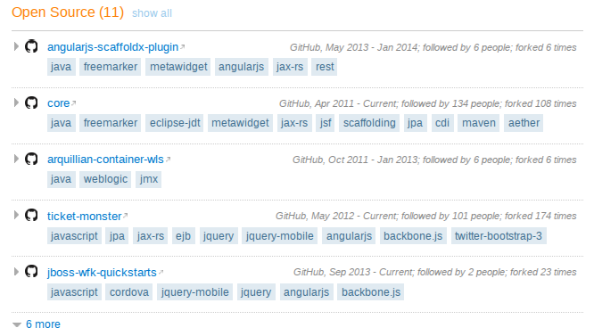
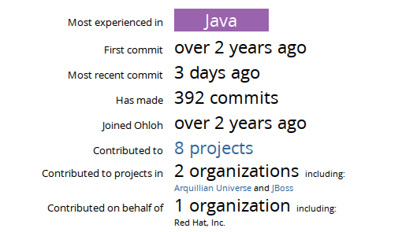
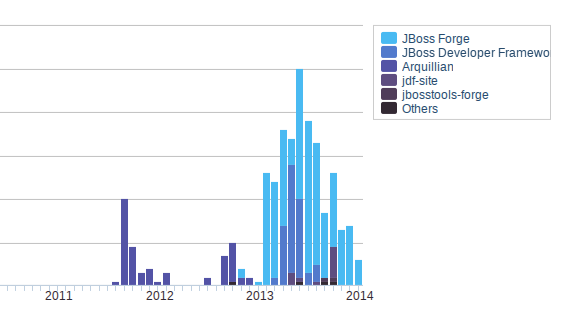

Working individually does not expose you to the challenges faced in real world projects.
It results in a lot of self-discovery with little or no reinforcement.
You may never converse with users about their problems and the features they need.
You may never work in a collaborative manner with other developers.
So no one reviews your code constructively, or builds on top of your code to offer more features.
You may also avoid using tools and practices that teams in the real world use, putting at a disadvanatage when you continue to work otherwise.
SCM allows multiple developers to work on the same code base without using manual backup techniques (copy of project, copy2 of project etc. etc.) :D
Build tools allow you to build your project in an automated manner. How many of you have several page manuals describing how to download and compile your projects? We automate these in the real world.
CI server extend your build scripts to perform builds at regular intervals. Companies like Google and Amazon use CI to allow them to publish deployments at dizzying rate. In a duration of 10 minutes, a deployment would have occured somewhere in the company. How quickly can you deploy your project?
Do you use text files or excel sheets to track issues? Well, no one does that in the real world, unless they’re poorly informed.
What about code submissions from others? Do you review them at all? And do you track review comments for posterity to track reasons for change?
And have you ever considered publishing documentation. Be it library API guides for developers, or user guides for end-users?
You get use all of these in well-run open source projects, saving you time because you do not have to independently discover this yourself.
Work on projects that matter
Good open source projects do not exist for vanity.
They solve a particular problem for businesses …
In a real good way.
They’re integral to today’s computing infrastructure.
Notes
What happens when a business has a problem that requires a solution in software?
Buy a COTS solution. Or get some to write it.
COTS can be expensive. Starups generally dont like to fork out money for mundae stuff like OSes, databases, application servers, frameworks and libraries.
There’s no significant advantage to be gained in writing these from scratch either.
So, re-use software built by others that happen to do a good job for your business.
Working on a OSS project that solves a business need is no different from working on a similar proprietary solution.
Work on projects that matter
There are several OSS projects numbering in thousands.
Sponsored by foundations and large companies.
Contributions associate you with their work and culture.
They signal your knowledge about the project.
Notes
When a company goes about hiring someone for a particular role, they like to choose the person most knowledgeable in their domain. Quite obvious isn’t it?
When they use an OSS project, contributors stand to be the first to benefit, since they’re most qualified.
Some stats on the Linux Kernel
From the Annual Linux Development Report 2013
Nearly 10,000 developers from more than 1,000 companies
Contributions from 1,100 developers from 225 companies in 2012
with growing numbers from mobile and embedded industries.
Notes
Need proof of companies investing in open source? Look no further.
Work done by contributors here find their way into the mainstream.
Servers in datacenters, laptops, workstations and Android devices all benefit from these contributions.
Some stats on the Linux Kernel
Top 10 organizations sponsoring development, from the Annual Linux Development Report 2013
Red Hat
Intel
Texas Instruments
Linaro
SUSE
IBM
Samsung
Google
Vision Engraving Systems Consultants
Wolfson Microelectronics
Notes
And these are not done by small-timers.
The companies that happen to employ people to contribute to Linux have a vested stake in ensuring the success of their products and services.
Some want to ensure that their software runs on all Linux distributions, others want Linux to run on their hardware.
Build an independently verifiable resume
Independently verifiable? Why does it matter?
Facts are independently verifiable. They’re undisputed.
Notes
Speaking of career development, OSS contributions lend to a trustworthy resume.
Why should hiring managers trust OSS contributors more?
Build an independently verifiable resume
Independently?
The burden of proof is not always on you.
Authors of contributions can be discovered by others.
Notes
Hiring managers are no longer reliant on word-of-mouth references from previous employers. They can look up contributions at their own discretion, not requiring the services of a gatekeeper.
Build an independently verifiable resume
Verifiable?
Your contributions are public. They can be examined and verified by others.
Contributions are reflected and archived for posterity in release notes, list of contributors, mailing list archives, bug trackers, commit logs among others.
Notes
Hiring managers can now verify the same data that they independently accessed.
… a real-world portfolio of work gives you an edge when applying for jobs. Contributing to an open source project provides you with that real-world portfolio …
Leslie Hawthorn
An example

Notes
Career portals now allow you to post open source projects that you’ve contributed to.
Needless to say, it makes sense to post those that have had an impact.
Be prepared to justify the importance of these projects to hiring managers who may not understand the community using them ;-)
Work with and learn from really Smart PeopleTM
Smart people tend to work with other smarter people.
An OSS project with smart people begets others.
The best thing you could do for yourself is to learn from them.
Very high quality of discussion. No bike-shedding.
Notes
If there’s one thing about smart people, it is that they spend time on working on
They try not to suffer the consequences of Parkinson’s law of triviality.
So, they try not to discuss how to color the bike shed, and instead debate on how to construct a nuclear reactor.
Work with and learn from really Smart PeopleTM
Learning happens when:
You discuss new features or bug fixes.
You perform code reviews or have your code reviewed.
You deliberate over ideas.
You are engaged in the project.
Notes
Working with smart people does not people that you are casually employed with them.
You need to ensure that ideas, features and bug fixes, are reviewed by them.
Understand their way of doing things. They are very rational beings and often have reasons to do things in a particular manner.
Doing this over a course of time increases your engagement with the project.
Engaging work increases cognitive function. This is a physiological behavior associated with dopamine. Working on stuff you like sometimes actually makes you smarter.
Tips on getting started with OSS
Choose a project to contribute to.
Preferably one that you already use.
Get very familiar with it.
Get involved on mailing lists and IRC.
Discover problem areas. Use the issue tracker.
Discuss on resolving issues and adding features.
Learn about the processes. Some projects require contributions in only one form.
Submit a patch.
Tips on getting started with OSS
Be courteous.
Communicate well.
Learn the political waters. Every project has them.
Learn from your mistakes. And correct them.
A sustained contribution model
Be persistent.
Become a committer. You can do anythingwell not really
Become the expert in an subject area.
Be open to opportunities.
Present at conferences
Review books about the project, or even author them yourself.
Support related projects that build on yours.
Consult for companies part/full-time.
Reflect, recalibrate

Notes
Sustained contributions would see your credibility rise in the community.
Do not be place emphasis on the number of commits and other gameable figures.
Contributions to projects should be measured by "impact" through bug fixes affecting a large populace instead of micro-commits with no tangible value.
Reflect, recalibrate

Notes
The contributions started nearly two years ago. There is a gap due to a consulting engagement that arose directly out of OSS contributions.
Book deals and offers to review books came in rather rapidly (with a year of contributing to Arquillian).
Do not get discouraged by projects that are not enlisted. There’s several missing ones in this graph.
And again don’t fret over numbers. The decrease is a result of moving into a healthier, more sustainable lifestyle to avoid burnout.
The Gluster Community
To create the world’s largest and most dynamic community for open software-defined storage
The Gluster Community Goal
Some history first
Started off as an attempt to build supercomupters using commodity hardware
Storage becomes a bigger challenge and focus shifts to GlusterFS
GlusterFS gets starts getting noticed and people start using it
Better management arrives and adoption of GlusterFS further increases
Red Hat becomes the primary sponsor for the Gluster community
Becomes a community for open source, software-defined storage